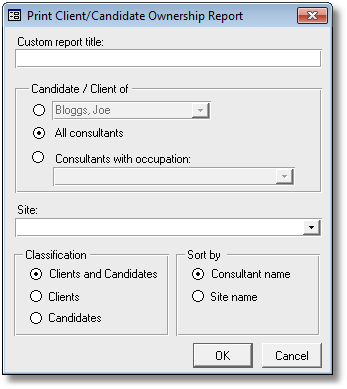

|
|
PRS News & Tips | June 2011 |
Latest News
We’ve just released PRS 8.0.4 with over a dozen new features and enhancements.
A few of the new features are detailed below. For a full list of the changes since the previous release see the PRS Changelog web page.
To download and upgrade go to the Installing the Latest PRS Client section on our Updates web page and follow the instructions.
What’s New in PRS 8.0.4
Go to Personnel records from the Document Search Tool
 in version 8.0.4
in version 8.0.4
You can now go directly to related linked document records from the Document Search Tool results.
-
If the matched document name is blue then the document is also linked to a Personnel record.
-
You can go directly to the linked Personnel record by holding down the Ctrl key and pressing the adjacent Goto button.
-
Highest scoring documents appear at the top of the list.
|
Tip
|
If the Document Search Tool does not match a linked document to a Personnel record (the document name is black instead of blue), but the document is linked and can be opened, then you can run the Relink Documents command from the File Locations options page. |
Message Merge Tool email address selection
in version 8.0.4
The Message Merge Tool now includes an EMail addresses option that allows you to select any combination of the recipients' EMail and Fax/EMail addresses.
In the following example the email will be sent to the address in the Fax/Email field. If the Fax/Email field is blank it will send the email to the address in the Email field.

Administrator Note creator assignment
in version 8.0.4
The creator of a new note can be altered providing the user has the administrator password. This is handy for organisations where the administration staff enter records on behalf of the consultant.

You can change the PRS colour for Offline Access
in version 8.0.4
You can set the PRS colour when in Offline Access mode using the Tools→Setup→Offline Access… menu command. This serves as a visual cue to remind you that you are viewing a read-only copy of the database (the PRS now displays a different colour by default).

New Client/Candidate Ownership report
We’ve added a new Client/Candidate Ownership report to the PRS Reports menu. This report has many options for selecting and listing client/candidate ownership information.


Tips and Tricks
Finding Multi-word Surnames
The Personnel Goto (Alt+G) command is one of the most widely used PRS commands, but if the last name contains spaces the PRS sees the first space character as a delimiter between the last and first name.
For example if the last name is De Witt then searching for De W will go to the first person with a last name starting with De and first name starting with W, probably not what we’re after.
The solution is to use the ? wildcard character in place of the space — instead of De W use De?W which will find all last names starting with De, fourth letter W.
Here’s an explanation of wildcards from our June 2009 newsletter.
How to Reject Candidate Applications
The PRS has three ways to assist you to decline candidate job applications:
-
You can send the applicant an email directly from their Personnel record by pressing he Goto button next to their email address and them selecting the Rejected message template.
-
Or you can use the Vacancy Activity Manager for bulk rejections.
-
Or by pressing the Reject button in the InBox Tool.
Need help?
Our Support web page explains how to get answers to PRS questions and includes links to articles on Maintaining Database Reliability and Performance and PRS Best Practice Deployment.
|
Important
|
If you no longer wish to receive this newsletter please email support@methods.co.nz with the word UNSUBSCRIBE in the subject line. |